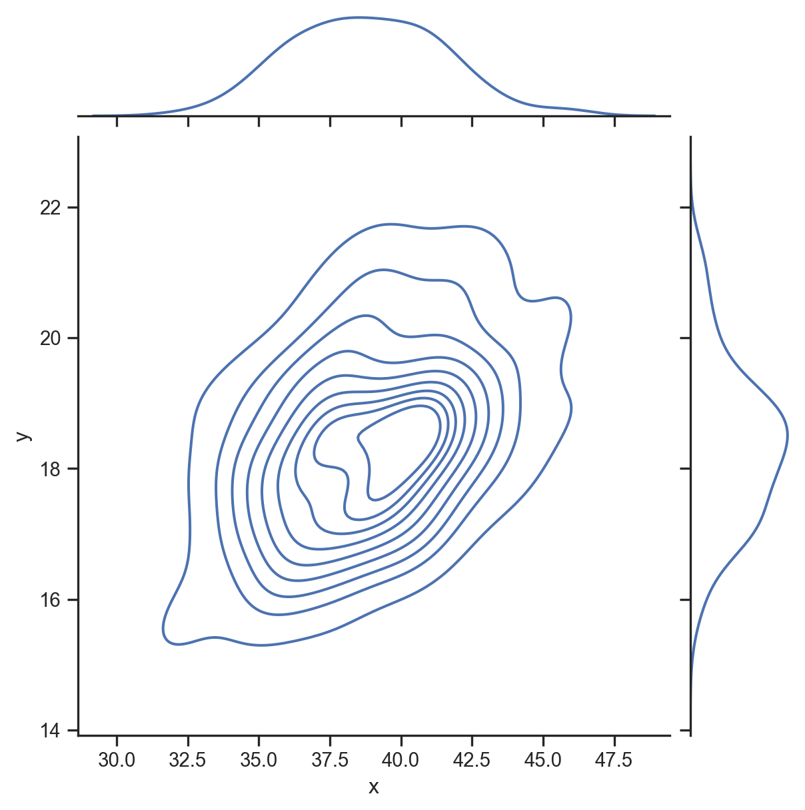
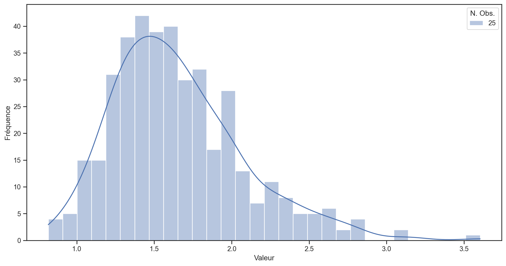
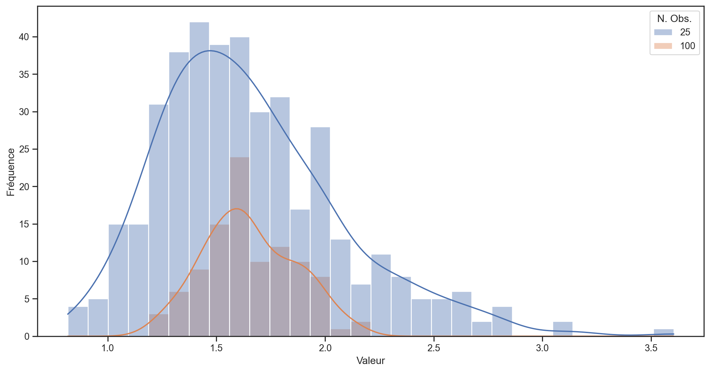
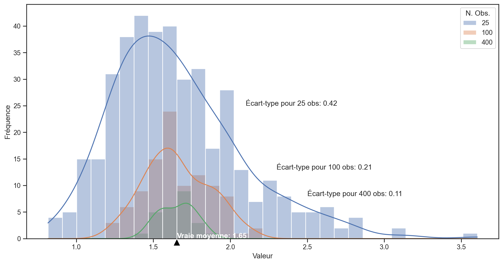
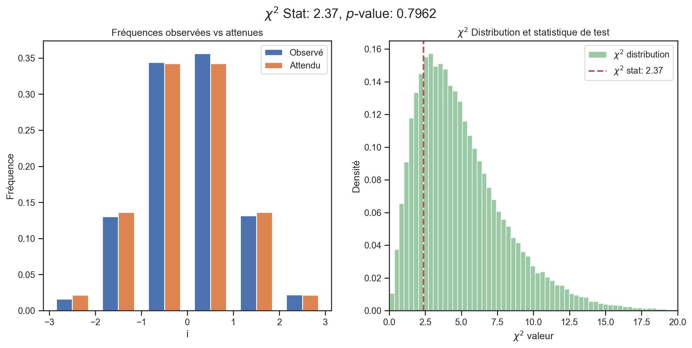
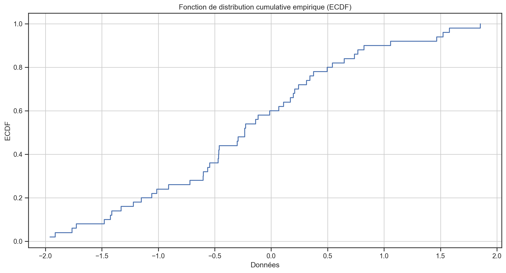
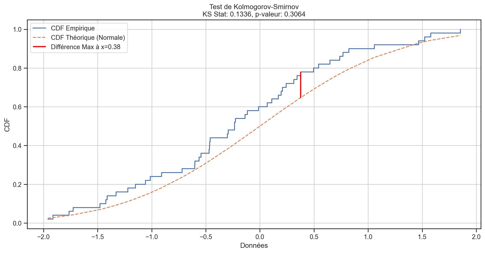
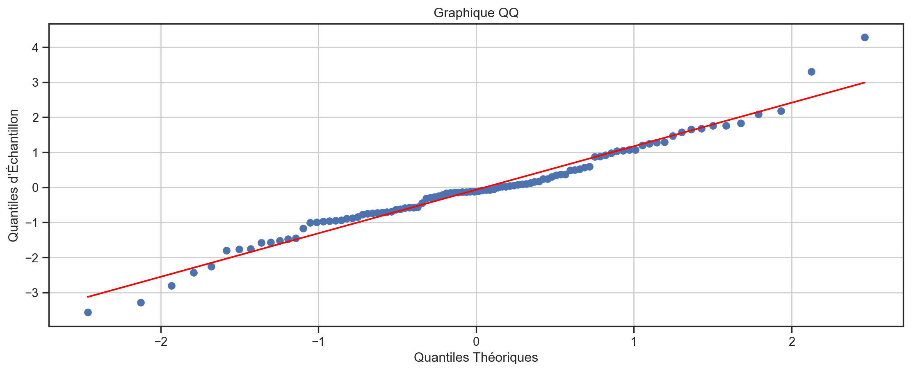
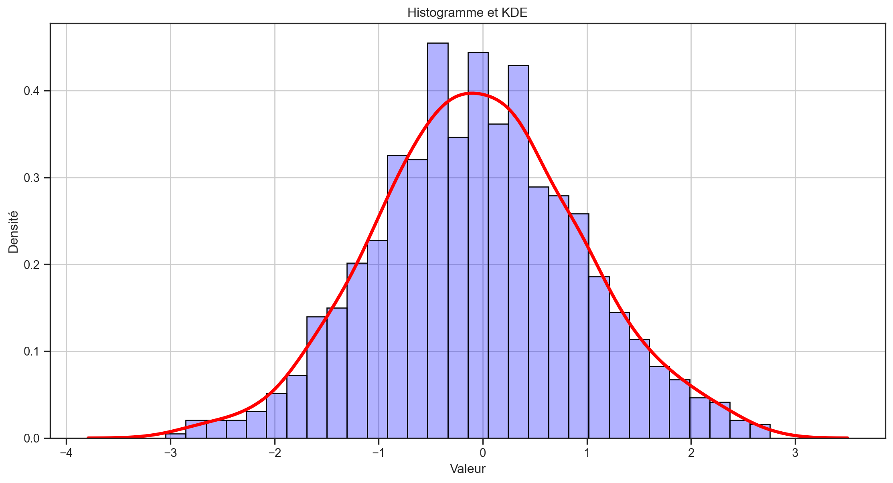

Plot = require("https://cdn.jsdelivr.net/npm/@observablehq/plot@0.6.11/dist/plot.umd.min.js")
d3 = require("d3")
jStat = require('https://cdn.jsdelivr.net/npm/jstat@latest/dist/jstat.min.js')
// Créer des curseurs avec une taille de texte plus petite
viewof mu = Inputs.range([-3, 3], {
step: 0.1,
value: 0,
label: tex`\text{loc: }\mu`,
width: "450px"
})
viewof sigma = Inputs.range([0.1, 3], {
step: 0.1,
value: 1,
label: tex`\text{scale: }\sigma`,
width: "450px"
})
// Disposer les curseurs côte à côte
html`<div style="display: flex; gap: 100px; margin-bottom: 50px;">
${viewof mu}
${viewof sigma}
</div>`MATH60207 - Séance 6
Plan
Revue des concepts en statistiques et probabilité:
- CDF et PDF
- Formule de Bayes
- Estimateurs
- Tests d’hypothèses classiques
Distributions empiriques:
- Test d’adéquation
- Graphiques Q-Q
- Estimation de la densité par noyau
Fonction de distribution cumulative (CDF)
La fonction de distribution cumulative (CDF) d’une variable aléatoire X est:
F\left( x\right) = \Pr\left( X<x \right)
- \Phi\left( x\right) \equiv~la CDF de la distribution normale standard N(0,1). (Aucune expression de forme fermée explicite)
CDF normale - N(\mu,\sigma)
CDF normale inverse - N(\mu,\sigma)^{-1}
viewof mu2 = Inputs.range([-3, 3], {
step: 0.1,
value: 0,
label: tex`\text{loc: }\mu`,
width: "450px"
})
viewof sigma2 = Inputs.range([0.1, 3], {
step: 0.1,
value: 1,
label: tex`\text{scale: }\sigma`,
width: "450px"
})
// Disposer les curseurs côte à côte
html`<div style="display: flex; gap: 100px; margin-bottom: 50px;">
${viewof mu2}
${viewof sigma2}
</div>`Fonction de densité de probabilité (PDF)
La fonction de densité de probabilité (PDF) d’une variable aléatoire X est:
\begin{align*} f\left( x\right) & =\frac{dF\left( x\right) }{dx}\\ \Rightarrow F\left( x\right) & = \int_{-\infty}^{x} f\left(u\right) du. \end{align*}
Pour N(0,1), nous avons que \frac{d\Phi\left( x\right) }{dx}\equiv\phi\left( x\right) = \frac{1}{\sqrt{2\pi}}e^{\frac{-x^{2}}{2}}.
Plus généralement, \forall x \sim N(\mu, \sigma^2):
f\left( x\right) =\frac{1}{\sigma\sqrt{2\pi}}e^{\frac{-1}{2}\cdot\left(\frac{x-\mu}{\sigma}\right)^{2}}=\sigma^{-1}\cdot\phi\left( \frac{x-\mu}{\sigma}\right)
PDF normale
viewof mu3 = Inputs.range([-3, 3], {
step: 0.1,
value: 0,
label: tex`\text{loc: }\mu`,
width: "450px"
})
viewof sigma3 = Inputs.range([0.1, 3], {
step: 0.1,
value: 1,
label: tex`\text{scale: }\sigma`,
width: "450px"
})
// Disposer les curseurs côte à côte
html`<div style="display: flex; gap: 100px; margin-bottom: 50px;">
${viewof mu3}
${viewof sigma3}
</div>`Distributions marginales, conjointes et conditionnelles
Densités:
- Marginale: f(x)
- Conjointe: f(x, y)
- Conditionnelle: f(x | y)
Relation entre la marginale et la conjointe:
f\left( x\right) =\int_{-\infty}^{\infty}f\left( x,y\right) dy
Si x et y sont indépendants, alors:
f\left( x,y\right) =f_{x}\left(x\right) \cdot f_{y}\left( y\right)
f(x), f(y), et f(x,y)

f(y | x = 40)

f(x | y = 20)

Formule de Bayes
Cette formule relie les densités conditionnelles, marginales et conjointes. Soit X et Y deux variables aléatoires. Pour toute réalisation x \in X et y \in Y:
f\left(x|y\right)=\frac{f\left( x,y\right)}{f\left(y\right)}\qquad\text{ou\qquad}f\left( x|y\right) \cdot f\left( y\right) = f\left(x,y\right)
Ce qui implique (entre autres choses):
f\left( x|y\right) \cdot f\left( y\right) =f\left( x,y\right)=f\left(y,x\right)=f\left(y|x\right)\cdot f\left(x\right)
La probabilité conditionnelle est utilisée pour mettre à jour nos connaissances. Les formules ci-dessus sont écrites pour les densités de variables continues. Pour les variables discrètes, remplacez les densités par des probabilités.
Exemple de la formule de Bayes
L’arrivée de nouvelles financières peut:
- Augmenter la volatilité des rendements du marché
- Augmenter le volume échangé
- Augmenter les coûts de transaction
Les nouvelles financières peuvent être modélisées comme une variable indicatrice (dummy) avec deux réalisations:
\begin{aligned} \mathcal{I}_{Nouvelles}= \begin{cases} 1, & \text{si une ou des nouvelles arrivent} \\ 0, & \text{si aucune nouvelle n'arrive} \\ \end{cases} \end{aligned}
Supposons que la volatilité du marché a deux états1, haut (H) et faible (L): \begin{aligned} \sigma= \begin{cases} \sigma_{H}, & \text{si} \ \sigma>5 \\ \sigma_{L}, & \text{si} \ \sigma \le 5 \\ \end{cases} \end{aligned}
Distributions marginales
Approximation des distributions marginales des nouvelles et de la volatilité à partir des données:
| Jours | Compte | Fraction |
|---|---|---|
| Nouvelles | 761 | 0.165 |
| Pas de nouvelles | 3,849 | 0.835 |
| Volatilité élevée | 1,432 | 0.311 |
| Volatilité faible | 3,178 | 0.689 |
| Total | 4,610 | 1.000 |
\begin{aligned} \mathcal{I}_{Nouvelles}= \begin{cases} 1, & \text{avec prob. 0.165} \\ 0, & \text{avec prob. 0.835} \\ \end{cases} \end{aligned}
\begin{aligned} \sigma= \begin{cases} \sigma_{H}, & \text{avec prob. 0.311} \\ \sigma_{L}, & \text{avec prob. 0.689 } \\ \end{cases} \end{aligned}
Distribution conjointe
Distribution conjointe des nouvelles et de la volatilité1:
| Jours | Compte | Fraction |
|---|---|---|
| Nouvelles et haute vol. | 284 | 0.062 |
| Nouvelles et basse vol. | 477 | 0.103 |
| Pas de nouvelles et haute vol. | 1,148 | 0.249 |
| Pas de nouvelles et basse vol. | 2,701 | 0.586 |
| Total | 4,610 | 1.000 |
\{\sigma, \mathcal{I}_{News}\} = \begin{cases} \{\sigma_{H}, 1\}, & \text{avec probabilité: 0.062} \\ \{\sigma_{L}, 1\}, & \text{avec probabilité: 0.103} \\ \{\sigma_{H}, 0\}, & \text{avec probabilité: 0.249} \\ \{\sigma_{L}, 0\}, & \text{avec probabilité: 0.586} \end{cases}
Estimation des probabilités
Étant donné que nous observons \mathcal{I}_{Nouvelles}=1 nous aimerions calculer la probabilité que \sigma=\sigma_{H}: \begin{aligned} \mathcal{P}(\sigma=\sigma_{H}\vert \mathcal{I}_{Nouvelles}=1) & = \dfrac{\mathcal{P}(\sigma=\sigma_{H}, \mathcal{I}_{Nouvelles}=1)} {\mathcal{P}(\mathcal{I}_{Nouvelles}=1)}\\ & =\frac{0.062}{0.165}\\ & =0.376 \end{aligned}
Étant donné que nous observons \mathcal{I}_{Nouvelles}=0 nous aimerions calculer la probabilité que \sigma=\sigma_{H}: \begin{aligned} \mathcal{P}(\sigma=\sigma_{H}\vert \mathcal{I}_{Nouvelles}=0) & = \dfrac{\mathcal{P}(\sigma=\sigma_{H}, \mathcal{I}_{Nouvelles}=0)} {\mathcal{P}(\mathcal{I}_{Nouvelles}=0)}\\ & =\frac{0.249}{0.835}\\ & =0.298 \end{aligned}
Loi de la probabilité totale
\begin{aligned} \mathcal{P}(X) &= \mathcal{P}(X,Y) + \mathcal{P}(X,Y^{c})\\ &= \mathcal{P}(X\vert Y)\mathcal{P}(Y) + \mathcal{P}(X \vert Y^{c})\mathcal{P}(Y^{c}) \end{aligned}
Les événements Y et Y^{c} partitionnent X en deux événements mutuellement exclusifs.
Supposons que nous avons observé \sigma=\sigma_{H} et que nous aimerions calculer \mathcal{P}(\mathcal{I}_{Nouvelles}=1\vert\sigma=\sigma_{H}):
\mathcal{P}(\mathcal{I}_{Nouvelles}=1 \vert \sigma=\sigma_{H}) = \dfrac{\mathcal{P}(\sigma=\sigma_{H}, \mathcal{I}_{Nouvelles}=1)} {\mathcal{P}(\sigma=\sigma_{H})}
Utiliser la loi de la probabilité totale au dénominateur: \begin{aligned} &= \dfrac{\mathcal{P}(\sigma=\sigma_{H}, \mathcal{I}_{Nouvelles}=1)} {\mathcal{P}(\sigma=\sigma_{H}\vert \mathcal{I}_{Nouvelles}=1)\mathcal{P}(\mathcal{I}_{Nouvelles}=1) + \mathcal{P}(\sigma=\sigma_{H}\vert \mathcal{I}_{Nouvelles}=0)\mathcal{P}(\mathcal{I}_{Nouvelles}=0)}\\ &= \dfrac{0.062} {(0.376 \times 0.165) + (0.298 \times 0.835) } \\ &=0.199 \end{aligned}
Conclusion sur la formule de Bayes
Haute volatilité conditionnelle sur nouvelles/pas de nouvelles: \begin{aligned} \mathcal{P}(\sigma=\sigma_{H}\vert \mathcal{I}_{Nouvelles}=1)&=0.376\\ \mathcal{P}(\sigma=\sigma_{H}\vert \mathcal{I}_{Nouvelles}=0)&=0.298 \end{aligned}
Arrivée des nouvelles conditionnelles sur la réalisation de haute/basse volatilité: \begin{aligned} \mathcal{P}(\mathcal{I}_{Nouvelles}=1 \vert \sigma=\sigma_{H})&=0.199\\ \mathcal{P}(\mathcal{I}_{Nouvelles}=1 \vert \sigma=\sigma_{L})&=0.149 \end{aligned}
Les nouvelles et la volatilité sont-elles liées?
Distributions des estimateurs
Supposons que nous avons une variable aléatoire X_{t}\sim N\left( \mu,\sigma^{2}\right) i.i.d.
- Nous pouvons estimer \mu par la moyenne de l \overline{X}=\frac{1}{T} \sum_{t=1}^{T}X_{t}.
- X_{t}\sim N()\Rightarrow \overline{X} sera également distribuée normalement.
Quelle est la moyenne de \overline{X}? E\left( \overline{X}\right) =E\left( \frac{1}{T}\sum_{t=1}^{T}X_{t}\right) =\frac{1}{T}\sum_{t=1}^{T}E\left( X_{t}\right) =\frac{1}{T}\times T\cdot \mu=\mu
Quelle est la variance de \overline{X}? \begin{align*} Var\left( \overline{X}\right) & =Var\left( \frac{1}{T}\sum_{t=1}^{T}% X_{t}\right) \\ & =\frac{1}{T^{2}}\left( \sum_{t=1}^{T}Var\left( X_{t}\right) +2\sum _{t=1}^{T}\sum_{\tau=t+1}^{T}Cov\left( X_{t},X_{\tau}\right) \right) =\frac{\sigma^{2}}{T}% \end{align*}
Convergence des moyennes échantillonnales
Supposons que X_{t}\sim i.i.d. avec une moyenne \mu et une variance \sigma^{2}.
- Pas d’hypothèse de normalité! Juste l’indépendance…
La loi faible des grands nombres (Weak Law of Large Numbers) implique la convergence en probabilité \overline{X}\overset{p}{\rightarrow}\mu\text{ lorsque }T\rightarrow\infty
Le théorème central limite (Central Limit Theorem) implique la convergence en distribution \frac{\sqrt{T}\left( \overline{X}-\mu\right) }{\sigma}% \overset{d}{\rightarrow}N(0,1)\text{ lorsque }T\rightarrow\infty donc \Pr\left( \frac{\sqrt{T}\left( \overline{X}-\mu\right) }{\sigma}<x\right) \rightarrow\Phi\left( x\right) \text{ lorsque }T\rightarrow\infty
Convergence des moyennes échantillonnales
Intuition
Rappelons que si X_{t}\sim i.i.d.\left(\mu,\sigma^{2}\right) et \overline{X}=\frac{1}{T}\sum_{t=1}^{T}X_{t}, alors E\left( \overline{X}\right) =\mu\text{ et }Var\left( \overline{X}\right) =\frac{\sigma^{2}}{T}%
- La convergence en probabilité \overline{X}\overset{p}{\rightarrow}\mu provient du fait que Var\left( \overline{X}\right) \rightarrow0 lorsque T\rightarrow\infty, ce qui implique que \overline{X} converge vers \mu lorsque T\rightarrow\infty.
- La convergence en distribution nécessite que, même si \overline{X} converge vers \mu, elle ne sera jamais précisément égale à \mu. Si nous mettons à l’échelle la différence \overline{X}-\mu par un facteur de \frac{\sqrt{T}}{\sigma}, nous obtenons une déviation qui converge vers N(0,1) lorsque T\rightarrow\infty.
Illustration avec une simulation
- Nous simulons T=10,000 tirages d’une distribution log-normale \sim e^{N(\mu,\sigma)}.1
- Nous divisons l’échantillon en 400, 100 et 25 sous-échantillons (de 25, 100 et 400 observations) et calculons la moyenne pour chaque sous-échantillon.
- Nous traçons la distribution des moyennes pour chaque taille de sous-échantillon.
- La véritable moyenne de la distribution log-normale est e^{\left(\mu + \frac{1}{2}\sigma^2\right)} = e^{0.5} \approx1.65
- La variance de la distribution est e^{2\mu+2\sigma^2}- e^{2\mu+\sigma^2} = e^2 - e \approx 4.67
- L’écart-type est \sqrt{e^2 - e}\approx 2.16.
400 échantillons de 25 observations

100 échantillons de 100 observations

25 échantillons de 400 observations

Se rapprocher à un taux de √N

Propriétés souhaitables pour un estimateur
Si nous utilisons \widehat{\theta} pour estimer \theta, quelles propriétés pourrions-nous souhaiter?
Sans biais (Unbiasedness): \widehat{\theta} est un estimateur sans biais de \theta ssi : E\left( \widehat{\theta}\right) =\theta
Convergent (Consistency): \widehat{\theta} est un estimateur convergent de \theta ssi : \widehat{\theta}\overset{p}{\rightarrow}\theta\text{ lorsque }T\rightarrow\infty
Efficace: Lorsque \widehat{\theta}_{1} et \widehat{\theta}_{2} sont deux estimateurs sans biais de \theta, alors \widehat{\theta}_{1} est plus efficace que \widehat{\theta}_{2} ssi Var\left( \widehat{\theta}_{1}\right) <Var\left( \widehat{\theta}% _{2}\right)
- \widehat{\theta} est un estimateur efficace s’il s’agit de l’estimateur à variance minimale.
- La borne inférieure de Cramer-Rao donne la limite de variance minimale pour certaines distributions.
Intervalles de confiance
Un intervalle de confiance est un intervalle construit autour d’un estimateur \widehat{\theta} qui a une probabilité spécifiée de contenir \theta.
Exemple : Supposons X_{t}\sim N\left( \mu,\sigma^{2}\right) et \overline{X}=\frac{1}{T}\sum_{t=1}^{T}X_{t}
Les X_{t} sont gaussiens, donc \overline{X}\sim N\left( \mu,\frac{\sigma^{2}}{T}\right), ce qui implique \frac{\overline{X}-\mu}{\frac{\sigma}{\sqrt{T}}}\sim N\left( 0,1\right)
Supposons qu’il existe deux valeurs l et u telles que \Phi\left( l\right) =\alpha/2 et \Phi\left( u\right) =1-\alpha/2. Par conséquent \Pr\left( l<\frac{\overline{X}-\mu}{\frac{\sigma}{\sqrt{T}}}<u\right) =1-\alpha
Un intervalle de confiance de niveau 1-\alpha pour la véritable moyenne \mu sera donc donné par l<\frac{\overline{X}-\mu}{\frac{\sigma}{\sqrt{T}}}<u\Leftrightarrow\mu \in\left[ \overline{X}-\frac{\sigma}{\sqrt{T}}u,\text{ }\overline{X}% -\frac{\sigma}{\sqrt{T}}l\right]
I.C. pour la moyenne d’une distribution normale
viewof mu4 = Inputs.range([-3, 3], {
step: 0.01,
value: 0,
label: tex`\bar{X}:`,
width: "300px"
})
viewof sigma4 = Inputs.range([1, 10], {
step: 0.1,
value: 5,
label: tex`\sigma:`,
width: "300px"
})
viewof sampleT = Inputs.range([10, 100], {
step: 1,
value: 30,
label: tex`T:`,
width: "300px"
})
viewof alpha = Inputs.range([0, 0.4], {
step: 0.01,
value: 0.05,
label: tex`\alpha:`,
width: "300px"
})
// Disposer les curseurs côte à côte
html`<div style="display: flex; gap: 60px; margin-bottom: 50px;">
${viewof mu4}
${viewof sigma4}
</div><div style="display: flex; gap: 60px; margin-bottom: 50px;">
${viewof sampleT}
${viewof alpha}
</div>`Plot.plot({
y: {
domain: [0, 5],
label: "f(x)"
},
x: {
domain: [-1.5, 1.5],
label: "x"
},
marks: [
Plot.line(
[{x: mu4, y: 0},{x: mu4, y: jStat.normal.pdf(0, 0, sigma4/sampleT)}],
{x: "x", y: "y", stroke: "red"}
),
Plot.line(
d3.range(-1.5, 1.5, 0.01).map(x => ({x, y: jStat.normal.pdf(x, mu4, sigma4/sampleT)})),
{x: "x", y: "y"}
),
Plot.areaY(
d3.range(mu4 - jStat.normal.inv(1 - alpha / 2, 0, 1) * sigma4/ sampleT, mu4 + jStat.normal.inv(1 - alpha / 2, 0, 1) * sigma4/sampleT, 0.01).map(x => ({x, y: jStat.normal.pdf(x, mu4, sigma4/sampleT)})),
{x: "x", y: "y", fillOpacity: 0.3, fill: "#0072ce"}
),
],
grid: true,
height: 450,
width: 1050,
style: {
backgroundColor: "white"
}
})Tests d’hypothèses classiques
Dans un test d’hypothèse (classique)
- Nous spécifions une hypothèse nulle (H_{0}) concernant la valeur du paramètre \mu dans la population.
- Nous choisissons un estimateur pour \mu (parfois implicitement) tel que nous connaissons sa distribution si \mu prend la valeur hypothétique.
- Nous essayons ensuite de rejeter H_{0} en le comparant à une hypothèse alternative H_{A}.
- Notre critère de rejet est : la statistique de test est-elle suffisamment peu probable d’avoir été observée si l’hypothèse nulle est vraie?
Exemples: \begin{align*} H_{0} & :\mu=\mu_{0};\text{ \ \ \ }H_{A}:\mu<\mu_{0}\\ H_{0} & :\mu=\mu_{0};\text{ \ \ \ }H_{A}:\mu>\mu_{0}\\ H_{0} & :\mu=\mu_{0};\text{ \ \ \ }H_{A}:\mu\neq\mu_{0}% \end{align*}
- Si \mu_{0} est dans l’intervalle de confiance 1-\alpha pour \mu, nous ne pouvons pas rejeter H_{0}.
Niveau de significativité
Rejeter ou accepter H_{0} dépend du choix de \alpha.
- 1-\alpha est appelé le seuil de confiance d’un test
- \alpha est appelé le seuil de significativité d’un test
- La taille d’un test est la probabilité que nous rejetions un véritable H_{0}.
- Un test est valide lorsque sa taille n’est pas supérieure à son seuil de significativité \alpha
- Lorsqu’un test souffre d’une distorsion de taille, ce n’est plus un test valide.
valeur p (p-value)
La valeur p d’un test est la plus petite valeur \alpha_{0} pour laquelle nous pouvons encore rejeter H_{0}.
- Supposons \widehat{\theta}\sim t_{10} si H_{0}:\theta=0 est vraie.
- Si \widehat{\theta}=2.5, alors p-value =1-F_{t_{10}}\left(2.5\right)=0.0157.
- Si \widehat{\theta}=1.5, alors p-value =1-F_{t_{10}}\left(1.5\right)=0.0823.
- Le seuil de significativité dépend de la valeur critique que nous choisissons.
- La taille dépend également de la véritable distribution de \widehat{\theta} sous H_{0}.
- La valeur p dépend à la fois de la distribution véritable de \widehat{\theta} sous H_{0} ainsi que de la valeur de notre statistique de test \widehat{\theta}.
Erreurs : Types I et II
Les tests d’hypothèse comportent deux types d’erreurs possibles :
| Probabilité | si H_{0} est vraie | si H_{0} est fausse |
|---|---|---|
| de ne pas rejeter H_{0} | 1-\alpha | \beta |
| de rejeter H_{0} | \alpha | 1-\beta |
- \alpha est la probabilité d’erreur de type I.
- \beta est la probabilité d’erreur de type II.
Dans les tests d’hypothèse classiques, nous contrôlons l’erreur de type I mais pas l’erreur de type II.
La théorie de la décision essaie d’équilibrer la probabilité des deux types d’erreurs.
- Par exemple, en utilisant de grandes valeurs de \alpha lorsque T est petit et de petites valeurs de \alpha lorsque T est grand.
- Pourquoi ? Si \alpha est fixe, \beta diminue lorsque T augmente.
Puissance d’un test
1-\beta est la puissance d’un test.
- La puissance nous indique la probabilité de rejeter une hypothèse nulle qui est fausse.
- La puissance dépend de l’hypothèse alternative. Une alternative qui est proche de la nullité sera plus difficile à rejeter qu’une alternative qui est éloignée de la nullité.
- Supposons que l’hypothèse nulle est H_{0}:\mu=0
- La puissance du test de H_{0} contre l’alternative H_{A}:\mu=6 sera beaucoup plus grande que celle du test de H_{0} contre l’alternative H_{A}:\mu=0.01.
- Un bon statisticien garde à l’esprit à la fois la taille et la puissance de ses tests.
Lors de rejet de H_{0}, la taille du test compte.
Lorsque nous sommes incapable de rejeter H_{0}, la puissance du test importe.
Plus sur les Tests d’Hypothèse Classiques
Les tests d’hypothèses classiques ne sont vraiment informatifs que lorsque nous rejetons l’hypothèse nulle.
- L’incapacité de rejeter la nulle n’implique pas que la nulle est correcte.
- Ne dites jamais “les résultats du test prouvent que l’hypothèse nulle est correcte.”
- Lorsque nous sommes incapables de rejeter l’hypothèse nulle, nous n’avons généralement aucune idée de la probabilité de la rejeter lorsqu’elle est fausse.
Cela ressemble beaucoup à un procès judiciaire.
- Les gens sont innocents jusqu’à preuve du contraire.
- Un verdict d’innocence ne prouve pas l’innocence. Cela signifie simplement qu’il n’y avait pas suffisamment de preuves pour condamner (c’est-à-dire un doute raisonnable).
Significativité économique et statistique
Significativité statistique Pouvons-nous rejeter l’hypothèse nulle à des niveaux de confiance typiques ?
Significativité économique La différence entre notre estimation et l’hypothèse nulle est-elle importante ou intéressante ?
Exemple Supposons que nous examinons l’\alpha1 annuel des stratégies de trading.
- Si \widehat{\alpha}_{momentum}=0.1\% et nous rejetons l’hypothèse nulle : H_{0}:{\alpha}_{momentum}=0, la performance est statistiquement significative, mais pas économiquement.
- Si \widehat{\alpha}_{secret}=22\% et que nous ne rejetons pas l’hypothèse nulle, la performance est toujours économiquement significative (et notre test manque de puissance).
p-values : Contexte

p-values : Contexte
2016 ASA Statement on Statistical Significance and p-values (Wasserstein and Lazar 2016)
Reproducibility Across many research fields, a “surprising” fraction of published findings don’t survive further scrutiny. (e.g. Drug trials, excess returns, economic policy impacts)
The list of references 26 in Health Science, 8 in Statistics, 5 Other, 0 Finance
Results “…much confusion and even doubt about the validity of science is arising. Such doubt can lead to radical choices, such as the one taken by the editors of Basic and Applied Social Psychology, who decided to ban p-values (null hypothesis significance testing).”
p-values: Contexte
2016 ASA Statement on Statistical Significance and p-values (Wasserstein and Lazar 2016)
Underpinning many published scientific conclusions is the concept of “statistical significance,” typically assessed with an index called the p-value. While the p-value can be a useful statistical measure, it is commonly misused and misinterpreted. This has led to some scientific journals discouraging the use of p-values, and some scientists and statisticians recommending their abandonment, with some arguments essentially unchanged since p-values were first introduced.
Principles
- p-values can indicate how incompatible the data are with a specified statistical model.
- This incompatibility can be interpreted as casting doubt on or providing evidence against the null hypothesis or the underlying assumptions.
- p-values do not measure the probability that the studied hypothesis is true, or the probability that the data were produced by random chance alone.
- Researchers often wish to turn a p-value into a statement about the truth of a null hypothesis or about the probability that random chance produced the observed data. The p-value is neither.
Principles
- Scientific conclusions and business or policy decisions should not be based only on whether a p-value passes a specific threshold.
- Researchers should bring many contextual factors into play to derive scientific inferences, including the design of a study, the quality of the measurements, the external evidence for the phenomenon under study, and the validity of assumptions that underlie the data analysis.
- The widespread use of “statistical significance” (generally interpreted as p\leq0.05) as a license for making a claim of a scientific finding (or implied truth) leads to considerable distortion of the scientific process.
- Proper inference requires full reporting and transparency.
- Valid scientific conclusions based on p-values and related statistics cannot be drawn without at least knowing how many and which analyses were conducted, and how those analyses (including p-values) were selected for reporting.
Principles
- A p-value, or statistical significance, does not measure the size of an effect or the importance of a result.
- Statistical significance is not equivalent to scientific, human, or economic significance.
- By itself, a p-value does not provide a good measure of evidence regarding a model or hypothesis.
- A relatively large p-value does not imply evidence in favor of the null hypothesis; many other hypotheses may be equally or more consistent with the observed data.
Principles
“What do you hope this statement will accomplish?”
We have big dreams for this statement. We’d love to see the practice of science with respect to its use of statistical inference undergo a cultural shift. We envision a “post p<0.05 era,” one in which scientific argumentation is not based on whether a p-value is small enough. In this era, attention would be paid to effect sizes and confidence intervals. …journals will stop using statistical significance to determine whether to accept an article. Instead, journals will accept papers based on a clear and detailed description of the study design, execution, and analysis. ….We won’t be left scratching our heads trying to sort out researcher degrees of freedom.
ASA President Jessica Utts, Amstat News, April 2016
Eugene Fama sur la statistique
“…I came to the University of Chicago in 1960…In my first year I took an intermediate statistics class with a professor named Harry Roberts…what I learned from Harry was a philosophy. He gave me an attitude toward statistics that has stuck with me ever since.
With formal statistics, you say something – a hypothesis – and then you test it. Harry always said that your criterion should be not whether or not you can reject or accept the hypothesis, but what you can learn from the data. The best thing you can do is use the data to enhance your description of the world. That has been the guiding light of my research. You should use market data to understand markets better, not to say this or that hypothesis is literally true or false. No model is ever strictly true. The real criterion should be: Do I know more about markets when I’m finished than I did when I started? Harry’s lesson is one that I’ve passed on to my students over the 49 years that I’ve been a teacher.
Intervalles de confiance
In recent decades, economic practices have evolved and focused on:
- Identification
- Economic and statistical significance
- Using correct standard errors
- New methods for dynamics, heterogeneity, and nonlinearities.
However, most papers concentrate on:
- Whether the point estimates are statistically significantly different from zero.
- Economic interpretation of the point estimates.
In Praise of Confidence Intervals (Romer 2020)

Pourquoi les statistiques t ou p ne sont-elles pas suffisantes?
- Sometimes we care about more than rejecting a value of 0.
- Decision makers sometimes want to compare to a “threshold” for action.
- A t-statistic of 2.1 or 2.6 is merely strong evidence against a value of zero, while a t-statistic of 4.0 is overwhelming evidence.
- Smaller t-statistics provide strong evidence against a value of zero, they provide only moderate evidence against many values that are much closer to zero than to the point estimate.
- It is rare for there to be no issues or concerns with the estimates and standard errors.
Solution
But, which interval to report?
- With the traditional 2 standard error interval (\sim 95\%), boundary values are 7 times less likely than the point estimate. Is it worth reporting the whole range?
- 90% (1.645 standard error) bands, they appear to be the most natural alternative, point estimate is 4 times more likely than boundary values.
- Even better, report both!
But, which interval to report?
- With the traditional 2 standard error interval (\sim 95\%), boundary values are 7 times less likely than the point estimate. Is it worth reporting the whole range?
- 90% (1.645 standard error) bands, they appear to be the most natural alternative, point estimate is 4 times more likely than boundary values.
- Even better, report both!
Tests d’Hypothèses Multiples
Explication du Problème
Se produit lorsque les chercheurs effectuent un grand nombre de tests similaires pour déterminer si une hypothèse nulle conjointe doit être rejetée.
Au fur et à mesure que de plus en plus de tests sont effectués, les lois de la probabilité indique que les chances de faux positifs deviennent très importantes.
Cela devient un problème lorsque le rejet d’une parmi plusieurs nulles est considéré comme une raison suffisante pour rejeter la nulle conjointe.
Voir 🍬 xkcd
Tests de Bonferroni
Supposons que nous souhaitons tester une hypothèse nulle conjointe à un seuil significativité de \alpha: H_{0}:\mu_{i}=0,\text{ }\forall\text{ }i=1,...,N L’hypothèse alternative est H_{A}:\exists\text{ au moins un }i\text{ tel que }\mu_{i}\neq0
- Nous pourrions faire un test séparé pour chaque paramètre \mu_{i}: H_{0}^{(i)}:\mu_{i}=0,\text{ }i=1,...,N Dès que nous trouvons un i pour lequel \left\vert t_{i}\right\vert >z_{\alpha} \Rightarrow rejeter H_{0}^{(i)},H_{0}
Si les tests sont indépendants, ils nous donneront un taux d’acceptation de H_{0} de \left( 1-\alpha\right) ^{N}, ce qui implique un taux de rejet de: 1-\left( 1-\alpha\right) ^{N}\neq\alpha
Tests de Bonferroni
Un test de Bonferroni ajuste simplement le seuil de significativité \alpha des tests individuels: H_{0}^{(i)}:\mu_{i}=0,\text{ }i=1,...,N Il utilise \left\vert t_{i}\right\vert >z_{\alpha/N}\Rightarrow rejeter H_{0}^{(i)}, i=1,...,N.
Cela donne un taux de rejet global pour H_{0} \leq\alpha.
Tests de Bonferroni
viewof numTests = Inputs.range([1, 100], {
step: 1,
value: 10,
label: tex`N`,
width: "450px"
})
viewof alpha2 = Inputs.range([0.01, 0.1], {
step: 0.01,
value: 0.05,
label: tex`\alpha`,
width: "450px"
})
// Disposer les curseurs côte à côte
html`<div style="display: flex; gap: 200px; margin-bottom: 20px;">
${viewof numTests}
${viewof alpha2}
</div>`bonferroniAlpha = alpha2 / numTests;
// Afficher le niveau de signification ajusté
html`<div style="display: flex; gap: 100px; margin-bottom: 20px;">
<p><div>Bonferroni-Ajusté ${tex`\alpha`}: ${bonferroniAlpha.toFixed(4)}</div><div> ${tex`1-\left( 1-\alpha\right)^N=`} ${(1 - Math.pow(1 - alpha2, numTests)).toFixed(4)}</div></p>
</div>`pValues = d3.range(numTests).map(() => Math.random());
// Tracer les p-valeurs et les seuils de signification
Plot.plot({
y: {
domain: [0, 1],
label: "p-valeur"
},
x: {
domain: [1, numTests],
label: "Numéro de Test"
},
marks: [
Plot.ruleY([alpha2], {stroke: "red", strokeWidth: 2, strokeDasharray: "4 4", label: "alpha"}),
Plot.ruleY([bonferroniAlpha], {stroke: "blue", strokeWidth: 2, strokeDasharray: "4 4", label: "Bonferroni alpha"}),
Plot.dot(pValues.map((p, i) => ({x: i + 1, y: p})), {x: "x", y: "y"})
],
grid: true,
height: 500,
width: 1050,
style: {
backgroundColor: "white"
}
})Tests de Bonferroni
Avantages :
- La taille du test conjoint ne dépasse pas le seuil de significativité souhaité \alpha.
- Facile à utiliser.
- Nous n’avons pas besoin d’estimer la covariance des estimations des paramètres que nous cherchons à tester.
Inconvénients :
- Pas nécessairement le test le plus puissant.
- Des tests plus puissants nécessitent généralement des estimations de cette matrice de covariance.
Tests de d’adéquation
Pearson
Nous souhaitons tester H_{0}:x\sim f\left( ~\right)
- N\left( 0,1\right)? Gaussienne? Résidus d’ARCH \sim t\left(d\right)?
Nous pourrions… tracer un histogramme.
- Besoin de choisir le nombre de groupes K.
- Comparer les fréquences observées b_{i} aux fréquences attendues e_{i} sous H_{0}.
e_{i}\equiv F\left( u_{i}\right) -F\left( l_{i}\right) , \text{ où } \left[ l_{i},u_{i}\right] \text{ définissent le }i\text{e groupe} b_{i}\equiv\% \text{ de l'échantillon dans l'intervalle }\left[ l_{i},u_{i}\right].
Test d’adéquation de Pearson (1900)
q = \sum_{i=1}^{K}\frac{T\left( b_{i}-e_{i}\right) ^{2}}{e_{i}} \sim \chi^{2}(K-1-p) \text{ pour grand } T où p\equiv\# \text{ paramètres estimés}.
- Rejeter H_{0} si q> valeur critique.
Tests d’adéquation
Pearson

Degrés de liberté
Lors de tests d’hypothèses, nous parlerons souvent des degrés de liberté (dof)
- En statistique, dof\approx T-p.
- T\equiv nombre d’observations (indépendantes).
- p\equiv nombre de paramètres estimés (explicites ou implicites).
- À mesure que p augmente, l’ajustement s’améliore. Nous devons corriger cela.
Exemple Test d’adéquation de Pearson: q = \sum_{i=1}^{K}\frac{T\left( b_{i}-e_{i}\right) ^{2}}{e_{i}} \sim \chi^{2}(K-1-p) Dans ce cas, dof=K-p.
La CDF empirique (ECDF)
Définition: La CDF empirique (ECDF) est une fonction échelon non décroissante 0 \leq \widehat{F}\left( x\right) \leq 1 telle que
\widehat{F}\left(x\right)\equiv\frac{1}{N}\cdot\sum_{i=1}^{N}1\left( x-x_{i}\right)
où nous avons des observations \{x_{1},\ldots,x_{N}\}.
- \Rightarrow \widehat{F}\left(x_{i}\right) est la fraction de l’échantillon <x_{i}.
La CDF empirique (ECDF)

Tests d’adéquation
Kolmogorov-Smirnov (KS)
Un échantillon: H_{0}: F\left( ~\right) = G\left( ~\right) où nous spécifions G.
Deux échantillons: H_{0}: F\left( ~\right) = G\left( ~\right) où G est la distribution inconnue d’un deuxième échantillon y.
Le test KS utilise la CDF empirique \widehat{F}\left( x_{i}\right).
La statistique de test est:
Un échantillon: D = \underset{i}{\sup}\left\vert \widehat{F}\left( x_{i}\right) - G\left( x_{i}\right) \right\vert
Deux échantillons: D = \underset{i}{\sup}\left\vert \widehat{F}\left( x_{i}\right) - \widehat{G}\left( y_{i}\right) \right\vert
Tests d’adéquation
Kolmogorov-Smirnov (KS)

Tests d’adéquation
Kolmogorov-Smirnov (KS)
Le test Kolmogorov-Smirnov présente certains avantages par rapport au test de Pearson plus populaire:
- Pas besoin de choisir K.
- Plus puissant (utilise toutes les T observations, pas seulement K groupes).
- La distribution exacte est connue sous H_{0}, même pour de petits T.
Il présente également certains inconvénients :
- Distribution non standard sous H_{0}.
- Pas le test le plus puissant si nous estimons les paramètres de G\left(\right), par exemple, N\left(\widehat{\mu},\widehat{\sigma}\right).
Graphiques QQ et P-P
Comment pouvons-nous comparer une distribution empirique à une distribution théorique?
- Tests d’adéquation:
- par ex. Pearson, Kolmogorov-Smirnov
- H_{0}:F\left( \tau\right) = \widehat{F}\left( \tau\right)
- Mais ces tests vérifient l’ensemble de la distribution; pour les tests, nous nous soucions principalement des queues (c’est-à-dire avons-nous les bonnes valeurs critiques?)
- Quelle est la puissance de ces tests? dans les queues? Devons-nous nous inquiéter de l’erreur de type II?
- Méthodes Graphiques:
- par ex. Graphiques QQ, Graphiques P-P (voir, par ex., Davidson and MacKinnon 1998)
Graphiques QQ
- Étant donné un échantillon \{X_{t}\}, ils tracent les quantiles de F\left( .\right) sur l’axe des x contre \widehat{F}\left( .\right) sur l’axe des y.
- c’est-à-dire \{F^{-1}\left( \widehat{F}\left( X_{t}\right) \right)\} sur l’axe des x contre X_{t} sur l’axe des y \forall t.

Estimateur de densité par noyau
Un histogramme typique ressemble plus à la ligne d’horizon d’une grande ville qu’à une fonction de densité, et son apparence est sensible au nombre et à l’emplacement de ses cellules.
Un estimateur bien meilleur est l’estimateur de densité par noyau (kernel density estimator, KDE): \widehat{f}(y) = \frac{1}{nb} \sum_{i=1}^{n} K \left(\frac{y-Y_i}{b}\right) où b, qui est appelé la bande passante, détermine la résolution de l’estimateur. K est la fonction de noyau, qui est une fonction de densité de probabilité symétrique autour de 0. La fonction de densité normale standard est un choix courant pour K.
Estimateur de densité par noyau

Graphique KDE
Un graphique d’estimation de la densité par noyau (KDE) est une méthode permettant de visualiser la distribution des observations dans un ensemble de données, analogue à un histogramme. KDE représente les données à l’aide d’une courbe de densité de probabilité continue dans une ou plusieurs dimensions.
Par rapport à un histogramme, KDE peut produire un tracé moins encombré et plus interprétable, en particulier lors du dessin de plusieurs distributions. Mais il a le potentiel d’introduire des distorsions si la distribution sous-jacente est bornée ou non lisse.
Estimateur de densité par noyau
data = d3.range(50).map(() => jStat.normal.sample(0, 1))
// Create a slider for bandwidth
viewof bandwidth = Inputs.range([0.02, 1], {
step: 0.02,
value: 0.4,
label: tex`b`,
width: "600px"
})
// Function to calculate KDE
function kde(data, bandwidth) {
const kernel = x => Math.exp(-0.5 * x * x) / Math.sqrt(2 * Math.PI)
const scale = 1 / (data.length * bandwidth)
return d3.range(-3, 3, 0.01).map(x => ({
x,
y: d3.sum(data, d => kernel((x - d) / bandwidth)) * scale
}))
}
// Plot the KDE with variable bandwidth
Plot.plot({
y: {
label: "Density"
},
x: {
label: "Value"
},
marks: [
Plot.line(kde(data, bandwidth), {x: "x", y: "y", stroke: "red", strokeWidth: 2})
],
grid: true,
height: 500,
width: 1050,
style: {
backgroundColor: "white"
}
})References
Baker, Monya et al. 2016. “Statisticians Issue Warning on p Values.” Nature 531 (7593): 151–51.
Baltagi, Badi H. 2022. Econometrics. 6th ed. Classroom Companion: Economics. Springer Cham. https://doi.org/10.1007/978-3-030-80149-6.
Davidson, Russell, and James G MacKinnon. 1998. “Graphical Methods for Investigating the Size and Power of Hypothesis Tests.” The Manchester School 66 (1): 1–26.
Fortune. 2012. “The Best Advice I Ever Got.” Fortune. https://fortune.com/2012/10/25/the-best-advice-i-ever-got/.
Romer, David. 2020. “In Praise of Confidence Intervals.” In AEA Papers and Proceedings, 110:55–60. American Economic Association.
Wasserstein, Ronald L, and Nicole A Lazar. 2016. “The ASA Statement on p-Values: Context, Process, and Purpose.” The American Statistician. Taylor & Francis.

MATH60230